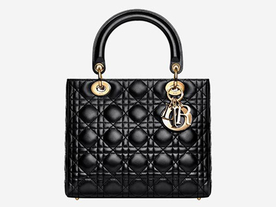
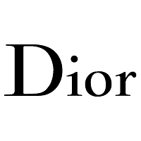

홈 > 브랜드 매거진 > 크리스챤 디올
크리스챤 디올
크리스챤 디올(Christian Dior)은 1946년 파리에서 설립된 프랑스 럭셔리 패션 하우스이다.
산업 분야 패션·럭셔리 · 공개 등급 편집 검수 · 브랜드 평가 4.7 ★


한눈에 보는 브랜드
크리스챤 디올(Christian Dior)은 디자이너 크리스챤 디올이 1946년 파리 몽테뉴가 30번지에 세운 프랑스 럭셔리 하우스다. 1947년 첫 컬렉션에서 잘록한 허리와 풍성한 스커트로 대표되는 뉴룩(New Look)을 선보여 전후 파리를 패션 중심지로 되돌려 놓았다.
현재 베르나르 아르노가 이끄는 LVMH 그룹 산하에 속하며, 그룹의 양대 축인 루이비통과 함께 패션·가죽제품 부문을 떠받치는 핵심 브랜드로 꼽힌다.
브랜드 관점
디올의 위상은 세 가지 축으로 읽힌다. 첫째, 경쟁사와의 결이 다르다.
희소성과 높은 가격으로 폐쇄성을 키우는 샤넬, 여행·모노그램 유산을 앞세운 루이비통과 달리 디올은 창업자 뉴룩에서 이어진 오트 쿠튀르 감성과 정서적 공감을 무기로 삼는다. 브랜드 평가에서 디올이 세계 럭셔리 부문 최상위 점수대를 받은 배경이다.
둘째, LVMH 생태계의 중심 자산이다. 그룹 패션·가죽제품 매출이 2024년 410억 유로대로 역풍을 맞은 와중에도 디올은 양호한 성과를 낸 하우스로 평가됐다.
셋째, 창작 체제가 바뀌었다. 2025년 6월 로에베 출신 조나단 앤더슨이 남성·여성·쿠튀르를 단독 총괄하는 크리에이티브 디렉터로 합류해, 1946년 창업 이후 처음으로 한 명이 전 부문을 지휘하게 됐다.
한국 시장에서는 블랙핑크 지수가 패션·뷰티 글로벌 앰배서더로서 레이디 디올의 상징성을 대변하며 막대한 미디어 가치를 만들어 왔다.
시작과 성장
창업은 후원에서 출발했다. 직물 사업가 마르셀 부삭이 6백만 프랑을 대며 새 하우스 설립을 제안했고, 크리스챤 디올은 옛 브랜드를 잇는 대신 자기 이름으로 새 출발할 것을 고집해 1946년 12월 메종을 열었다.
1947년 2월 12일 발표한 데뷔 컬렉션의 둥근 어깨·잘록한 허리·풍성한 스커트는 곧 뉴룩으로 불리며 전후 여성복 흐름을 바꿔 놓았고, 같은 해 누이를 기린 향수 미스 디올이 나왔다. 1957년 창업자가 갑작스레 세상을 떠난 뒤에는 이브 생로랑이 스물한 살에 후임으로 올라섰고, 이어 마크 보앙, 잔프랑코 페레, 존 갈리아노, 라프 시몬스, 마리아 그라치아 치우리로 수석 디자이너가 이어졌다.
한편 베르나르 아르노는 1980년대에 부삭 그룹을 인수하며 디올을 손에 넣었고, 이후 디올은 LVMH 체제로 편입되어 오늘에 이른다.
브랜드 아이덴티티
디올의 핵심 가치는 창업자가 정립한 우아함과 오트 쿠튀르 장인정신, 그리고 여성성에 대한 헌사다. 로고는 코섕(Cochin) 계열의 가늘고 긴 세리프체로 검은 글자와 흰 바탕을 쓰는 절제된 워드마크로, 모노그램을 전면에 내세우는 일부 경쟁사와 달리 활자 중심의 정갈한 정체성을 지킨다.
1967년 마크 보앙이 도입한 디올 오블리크(Oblique)는 네 글자를 비스듬히 반복한 자카르 패턴으로 가방·가죽제품을 가로지르는 시각 언어가 됐다. 타깃은 클래식한 품격과 동시대 감각을 함께 원하는 고급 소비자이며, 브랜드 보이스는 정서적 공감과 쿠튀르의 권위를 결합한 톤을 유지한다.
제품과 서비스
대표 상품은 가방과 향수로 나뉜다. 레이디 디올은 라지 라인이 약 7천 달러대, 미니·마이크로가 수천 달러대에 형성돼 있고, 말안장을 닮은 새들백은 오블리크 자카르 기준 3천 달러대다.
향수는 미스 디올 오 드 퍼퓸이 백 달러 초반대, 남성 향수 소바주는 용량과 포맷에 따라 백 달러대에서 수백 달러대까지다. 유통은 직영 부티크와 공식 온라인, 백화점 채널을 중심으로 한다.
현재 상태
모회사는 LVMH 그룹이며 본사는 프랑스 파리 몽테뉴가에 있다. 크리스챤 디올 쿠튀르의 회장 겸 최고경영자는 베르나르 아르노의 장녀 델핀 아르노이고, 크리에이티브 디렉터는 2025년 합류해 남성·여성·쿠튀르를 단독 총괄하는 조나단 앤더슨이다.
그 외 세부 경영 지표는 미공개.
타임라인
BI/CI 변천사

BI/CI 아카이브BI/CI 아카이브함께 읽을 브랜드
 패션·럭셔리 · 매거진 완성루이비통
패션·럭셔리 · 매거진 완성루이비통루이비통은 여행가방에서 출발했지만, 이동의 기능을 럭셔리한 삶의 상징으로 확장했다. 브랜드의 헤리티지는 물건을 담는 도구가 아니라 이동하는 사람의 취향과 지위를 표현...
 패션·럭셔리 · 편집 검수샤넬
패션·럭셔리 · 편집 검수샤넬샤넬은 패션을 장식이 아니라 태도와 해방의 언어로 바꾼 브랜드다. 브랜드의 힘은 제품의 고급스러움뿐 아니라 여성의 몸과 생활 방식을 새롭게 해석한 상징성에서 나온다.
 패션·럭셔리 · 편집 검수생 로랑
패션·럭셔리 · 편집 검수생 로랑생 로랑(Yves Saint Laurent)은 1961년 파리에서 설립된 프랑스 럭셔리 패션 하우스이다.
 패션·럭셔리 · 편집 검수디젤
패션·럭셔리 · 편집 검수디젤디젤(Diesel)은 1978년 렌조 로소가 이탈리아 브레간체에서 설립한 데님 중심의 컨템포러리 패션 브랜드다. 도발적이고 실험적인 디자인으로 데님 헤리티지를 재해석...
 패션·럭셔리 · 편집 검수버버리
패션·럭셔리 · 편집 검수버버리버버리(Burberry)는 1856년 설립된 영국의 럭셔리 패션 하우스이다.
에르메스는 속도보다 장인성과 기다림의 가치를 브랜드 경험으로 만든다. 제품은 희소성과 품질을 통해 욕망을 만들지만, 더 깊은 차별성은 쉽게 대체되지 않는 제작 태도와...
 패션·럭셔리 · 매거진 완성코치
패션·럭셔리 · 매거진 완성코치코치는 실용적 가죽 제품을 일상적 럭셔리의 영역으로 끌어올린 브랜드다. 과시적 명품보다 접근 가능한 품질과 라이프스타일 이미지를 통해 오래 쓰는 가방의 감각을 브랜드...
 패션·럭셔리 · 매거진 완성티파니
패션·럭셔리 · 매거진 완성티파니티파니는 주얼리 자체만큼이나 색과 포장, 선물의 의식을 브랜드 자산으로 만든다. 블루 박스와 매장 경험은 제품을 구매하는 순간을 특별한 사건으로 바꾸며, 브랜드의 상...